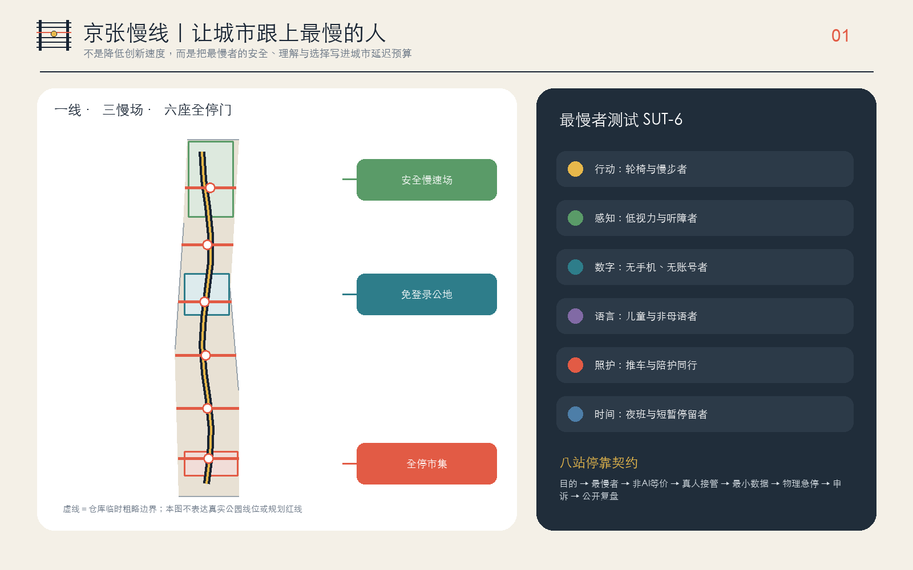
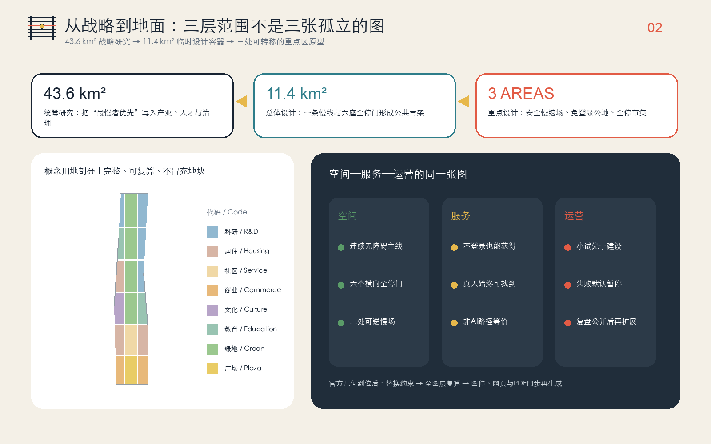
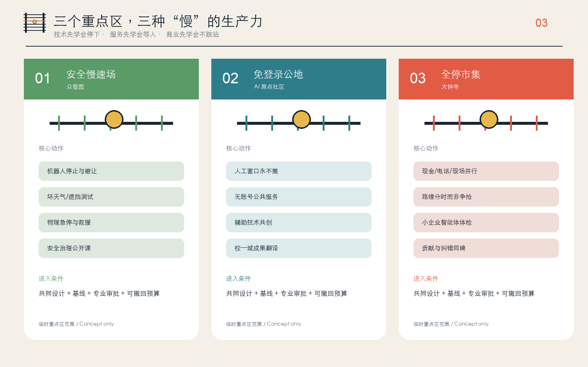
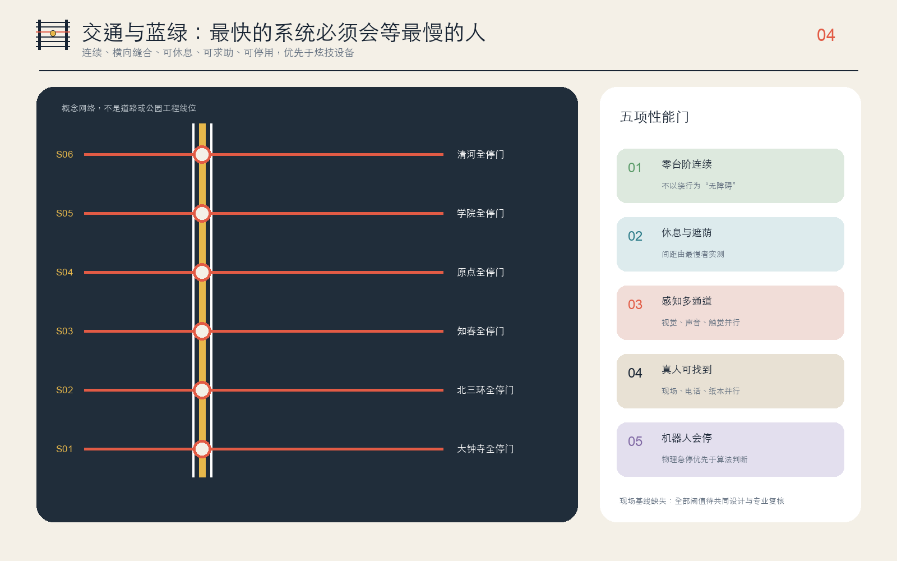
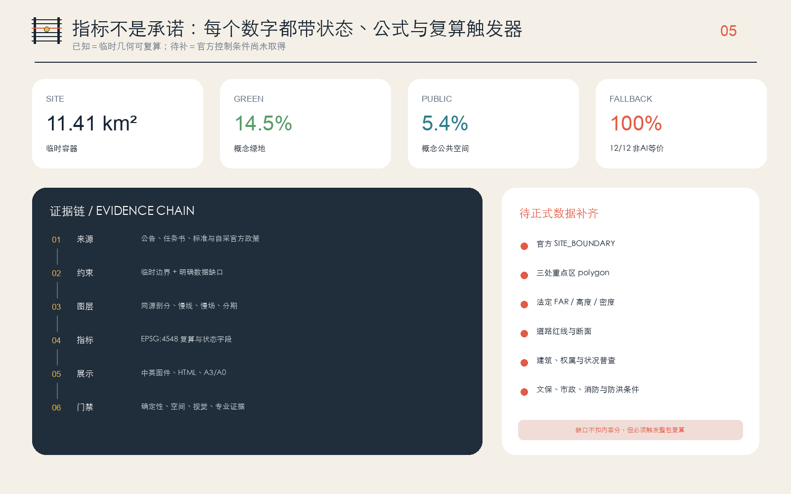

安全慢速场
众智园：具身智能先学会停下
一条把非AI等价服务、真人接管和最慢者共同设计写进城市空间的概念公共线。
PROVISIONAL · NOT AN OFFICIAL PLAN本地四门自检 PASS；仅表示审稿就绪，不代表官方批准。机器结果以 self_check.json 与 PR CI 为准。
临时总体边界与公开测绘存在社区报告的 412.5m 差异；本页不把示意主线冒充真实公园线位。


众智园：具身智能先学会停下
AI原点：公共服务先学会等人
大钟寺：商业不跳过非数字用户


建筑图层是三处重点区内的程序载体概念包络，不是现状测绘、拆除清单或建设承诺。更新遵循“先保留、再适配、最后才讨论可逆增补”。
三大定位、五大功能、三区两翼与 agent.1—agent.6 的完整映射见任务覆盖矩阵。
主控：官方公告、清权任务书、住建部与自然资源部标准快照。补充：无障碍法、国办发〔2020〕45号、生成式AI办法及六个国际案例；完整许可和用途边界见 sources.json。
官方红线、重点区、控规、道路、建筑、权属、文保和市政资料待补。最慢者测试必须由受影响群体共同设计，不能由本方案代言。
